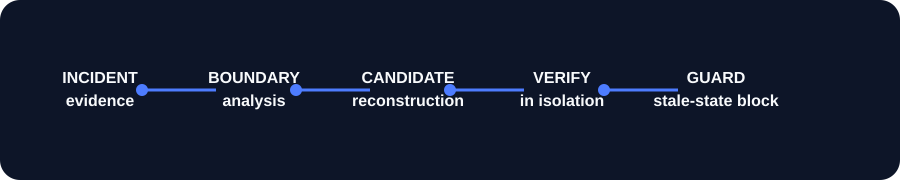

BACKEND RECOVERY CONTROL PLANE
Know what can recover
before you touch production.
Reprise reconstructs a mutually compatible backend state across code, schema, functions, contracts, configuration, and dependencies—then verifies it in isolation.
STATE GRAPHCHANGE LEDGERRECOVERY GUARDPROOF RECEIPTS
THE DIFFERENTIATOR
Reprise Signal
A portable recoverability passport. Not a confidence score: every dimension remains visible, traceable, and policy-enforceable.
DETERMINISTIC LOCAL DEMO
v1.8 breaks the users API.
v1.7 becomes the verified candidate.
Click through the same local scenario the CLI runs. No credentials. No provider operations. No fabricated production state.
reprise demo acquisitionReady to reconstruct incident-acquisition.
SAFE BY CONSTRUCTION
Recovery is a proof-bearing workflow.

Provider operations are capability-gated. Production promotion remains an explicit, separately authorized action. A stale state revision blocks a plan even when its candidate once verified.